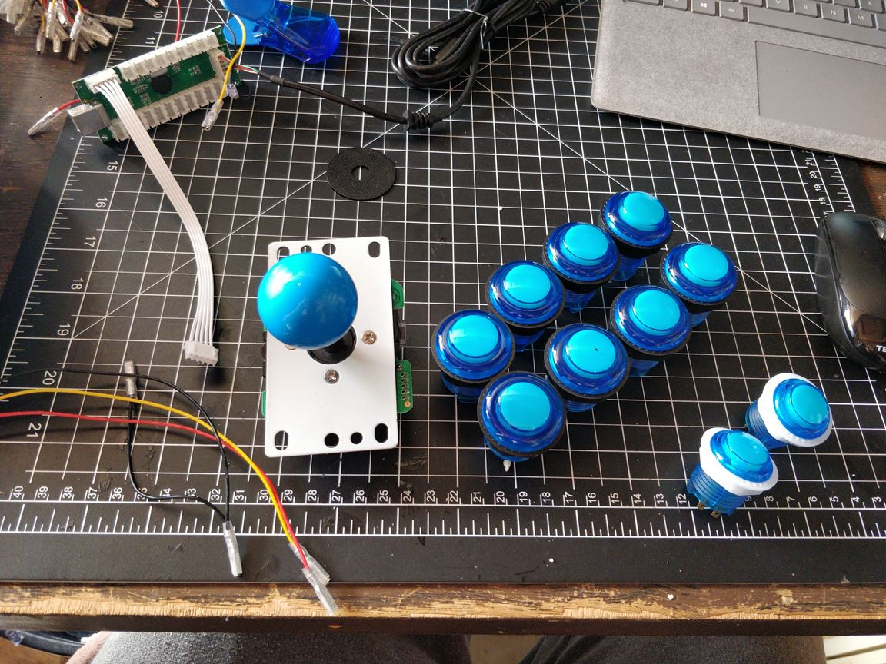

Conn is a Star Trek themed arcade games console. It runs Retropie on a Raspberry Pi 3B+ and has arcade joystick controller. The pi's USB ports are accessible so it can be used for multiplayer game sessions.

The arcade controller kit arrived!
The first face plate layout was printed just a few layers thick to test fit the arcade controls:
The second face plate layout was 4mm thick and took an age to print. The translucent filament turned cloudy which didn't look great.
I should have used more than one button at a time during the first test fitting - the buttons couldn't be mounted at the same time:
During the redesign I added cutouts to the plate to reduce material use and print time, as well as fixing the button spacing.
A quick test was in order, of course!
Some hours later...
I designed some legs, made some adjustments to the plate and printed again using a "galaxy" glitter filament. It is translucent and you can see different layers of glitter that look like stars. I sanded the plate to smooth the surface and make it soft to the touch. I used chunky thumb screws which gives it a cool industrial look, however after using the device for a while they can be a bit uncomfortable - I'll switch to some low profile screws in future.
The buttons are all blank so I decided to experiment to see if I could add inlays without affecting the performance.
I printed the inlays 0.4mm thick. They fit first time and just dropped right in, being held by the pressure between the button base and cover. They reduced the travel of the button a bit, but it isn't noticeable.

A base plate mounts to the legs and holds the RasPi and the arcade control board. The usb cable was really long so I shortened it and hid my amateur soldering in a small black box. Next time I'll just crimp the JST connectors, but I didn't have the tools to do that at the time.
My wife suggested I call the console "Conn", so I decided to go all the way and make it Star Trek themed. I traced the badge in Fusion 360 and added a bracket to mount it to the front plate
The back plates were designed to strengten the frame but had some space to add text. I downloaded the TNG font, traced and then extruded it. USS Home is the name of our smart home. Luckily I had a filament in stock that matched the TNG title font colour perfectly so I printed some back plates to make the text blue. This looks great from straight on, but the shadowing interferes with legibility when viewed at an angle so I'd probably do this differently next time.
A cutout was added to the lower rear brace to allow easy access to the power and HDMI ports
The component fit was pretty tight, but I just about found room for some side buttons. They turned out so well and complete the look of the system
All surfaces were sanded and clearcoated before assembly. The clearcoat really makes the glitter filament pop, though next time I'll probably use a gloss finish instead of the matte.